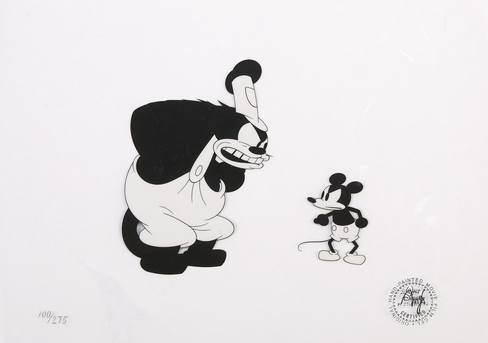

HISTORIA DE LA ANIMACIÓN

El año oficial del nacimiento del cine es el 1895, pero el nacimiento del cine de animación se produjo unos diez años más tarde, en 1905. Fue ese año cuando Segundo de Chomón realizó El hotel eléctrico, 1905, quizá la primera animación de la historia, aunque la historia oficial, escrita sobre todo por anglosajones y franceses, dice que este honor corresponde a La casa encantada, The haunted house, 1907, del inglés afincado en los Estados Unidos James Stuart Blackton. En 1907, Chomón realizó para los hermanos Pathé, Los Ki ri ki, uno de los primeros films coloreados con un sistema ideado por el propio Chomón. Lo cierto es que el honor del primer film de animación se lo disputan los cineastas Stuart Blackton, norteamericano, Segundo de Chomón, español, y Emile Cohl, francés.
James Stuart Blackton (1875-1941), ilustrador y periodista, rodó en 1900 The enchanted drawing, una de las primeras producciones de animación, muy imitada por sus contemporáneos, en la que realizaba dibujos de rostros rápidamente en una pizarra, donde los personajes cambiaban de expresión por medio de trucos de sustitución. En 1906 realizó Humorous Phases of Funny Faces, por algunos considerado el primer dibujo animado de la historia, puesto que los movimientos de los personajes se consiguen por la sucesión rápida de los fotogramas.
En un cortometraje Haunted Hotel, 1907, puede verse una mesa bien servida en la que los cubiertos se mueven solos, en donde se utilizó la técnica del stop motion e se introdujo la animación de objetos en tres dimensiones. A ese film le siguió otro, The Magic Fountain Pen ,1909, en el que una pluma animada con vida propia traza dibujos sobre un folio blanco. Blackton tenía grandes contactos con con Albert E. Smith, Edison y los fundadores de la Vitagraph.
Segundo de Chomón (1871-1929). El gran invento de Chomón fue el mecanismo de control del paso de la manivela de la cámara mediante el cual se podía trucar el tiempo y el movimiento de les imágenes. Fue el punto de partida de todo el cine de animación y en el que se sustenta hasta la actualidad. A partir de este descubrimiento (stop-motion), desarrolló un aparato la «cámara 16», que filmaba imagen por imagen con la que realizó sus más arriesgados proyectos. Hizo El hotel eléctrico, producida en 1908 por la Pathé, tal vez inspirada en El hotel embrujado (1906) de Stuart Blackton.
Entre lo más significativo de la obra de Chomón en cuanto a la animación está La poule aux oeufs d'or (1905), basado en la fábula de La Fontaine, en los que figura un cuadro de gallinas que se convierten en bailarinas gracias al paso de manivela, un huevo transfigurado en murciélago y otro que alberga la cabeza de un demonio. En La maison hantee (1906) narra una pesadilla mediante transparencias y sombras chinescas, en Le Theatre du Bob (1906) utiliza muñecos articulados que luchas a esgrima, boxean, y hacen gimnasia. En muchos otros film Chomón utilizó su creatividad para trucar utilizando sus sistemas de paso de manivela, coloreado y otros.